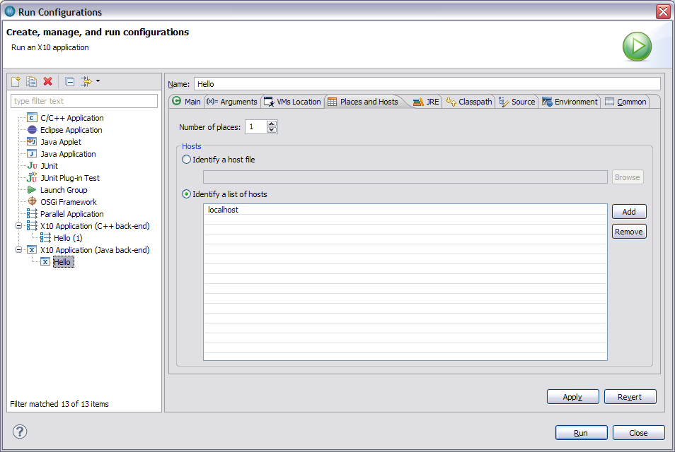
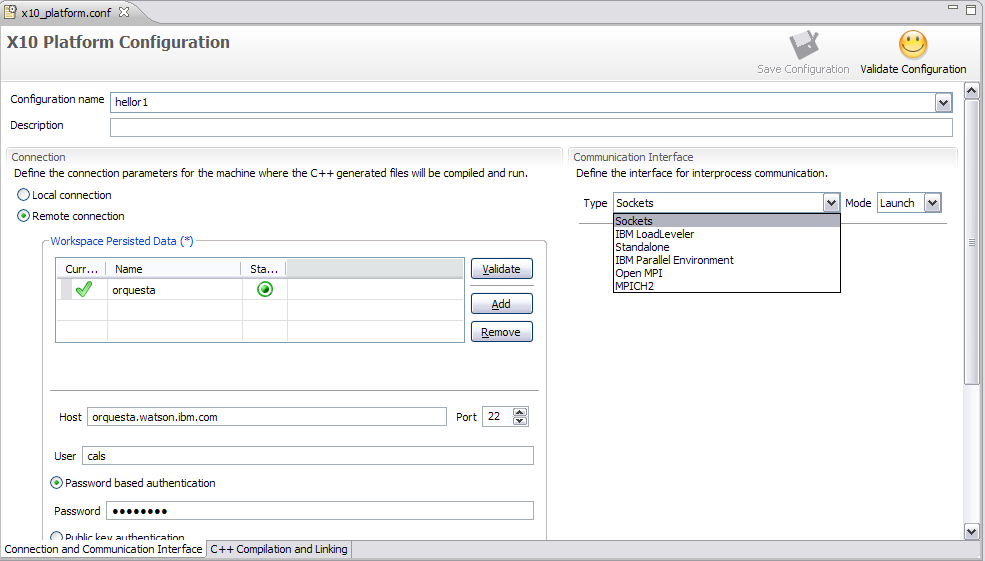
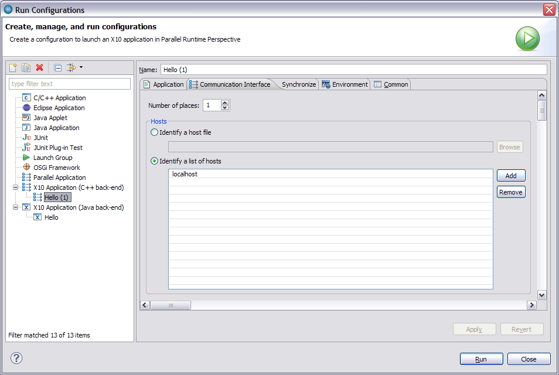
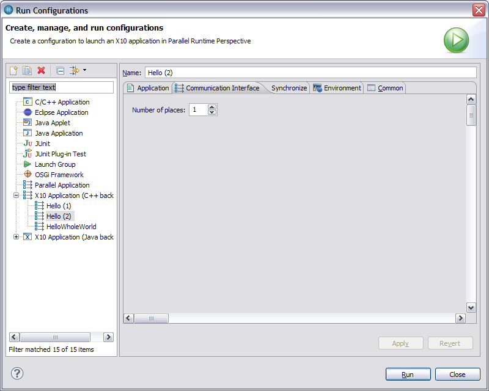

Here are descriptions of some of the more interesting or significant changes made to the X10 Tooling Platform for the 2.1.1 release. They are grouped into:
| X10 Development Toolkit | |
| Multi-JVM support |
For the C++ backend, there should be no changes (any changes are unintended bugs...) For the Java backend, we are now compiling/running code so that each place is run in a separate JVM process. The main difference is that execution will default to a single place. You use the run configuration variables (Number of places, host list, host file) to control multi-place launches as you do with the C++ backend and the sockets (default) runtime.  |
| Sockets transport |
The sockets transport replaces pgas_sockets (which is closed-source, and requires some setup), and is currently the default backend if you don't compile with the "-x10rt" flag.
You can select the transport to use in the platform configuration file. The default is the sockets transport.
 You set an run configuration variable Number of places to specify the number of places. If this is not set, it defaults to 1 place on the local machine, and prints a warning. There are two ways to specify the machines to run on:
Please note that currently, the Sockets backend will not work in an environment with mixed POWER and x86 hardware, due to different endianness.  Running with Standalone backendStandalone sets up shared memory regions and forks off one instance of the program per place. The places all run on the local machine. There is one run configuration variable "Number of places", which should be set to the number of places. If not set, it defaults to 1 and prints a warning. The standalone has transport has a limit on the size of the data blocks that can be sent (about 512k), because of the shared memory regions. To run, set the run configuration variable, and run your executable. This transport is a good choice if you're running everything one one machine and don't use large messages. |
| Quick Hierarchy new feature | The Quick Hierarchy pop-up view has a new feature: when a method declaration or method call is selected, bringing up the Quick Hierarchy now highlights classes that implement the currently-selected method within the hierarchy of that method's containing class." |
| Java Back-End | |
| C++ Back-End | |
| Additional Notes | |